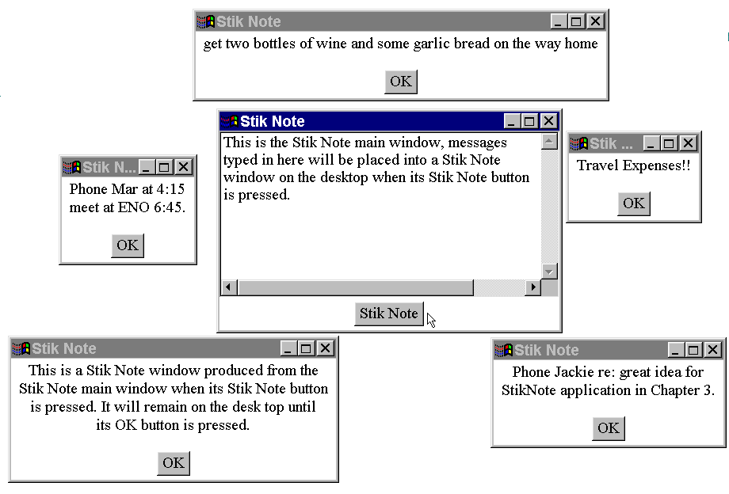

The StikNote application - visual appearance

The StikNoteMain window allows
the user to enter some text into a TextArea.
When the StikNote button
is pressed the text is transferred to a StikNoteNote
window, where it remains available until the user presses the
OK button.